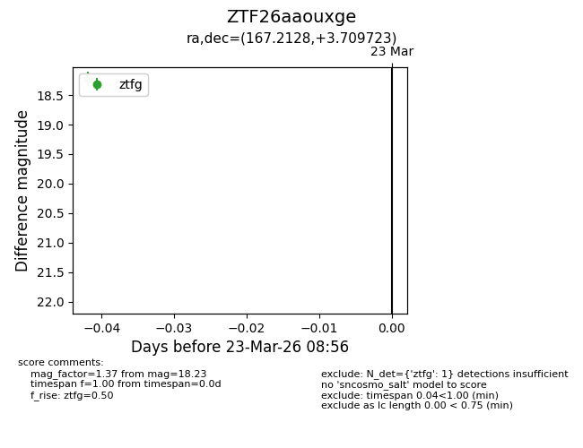
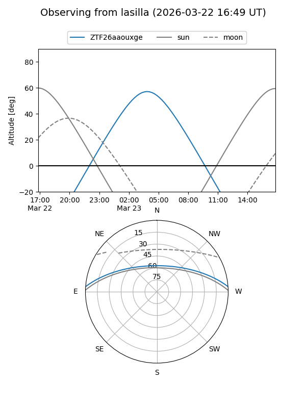
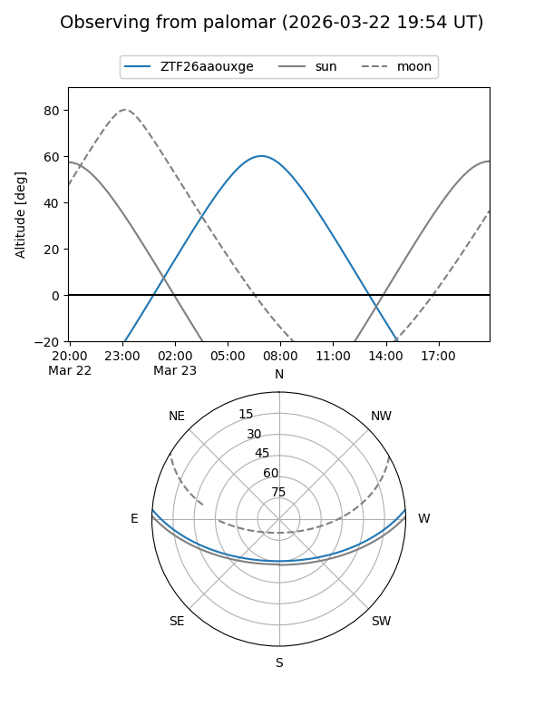

ZTF26aaouxge
Target ZTF26aaouxge at 2026-03-23 08:58
Aliases and brokers:
FINK: link
Lasair: link
ALeRCE: link
alt names
ZTF26aaouxge (ztf,fink_ztf)
Coordinates:
equatorial (ra, dec) = 167.2128,+3.70972
equatorial (HMS+DMS) = 11:08:51.08,+03:42:35.00
galactic (l, b) = (252.1603,+56.11196)
Flags:
Photometry:
last ztfg=18.23
1 ztfg detections
Lightcurve

Visibility


Additional plots